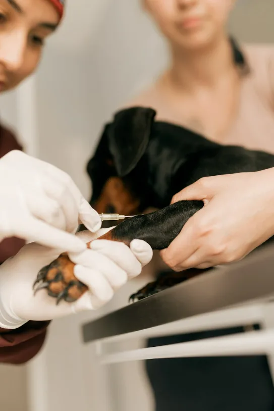
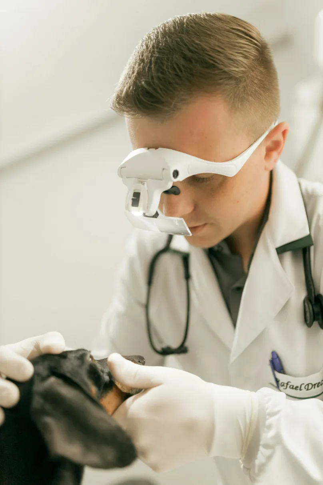
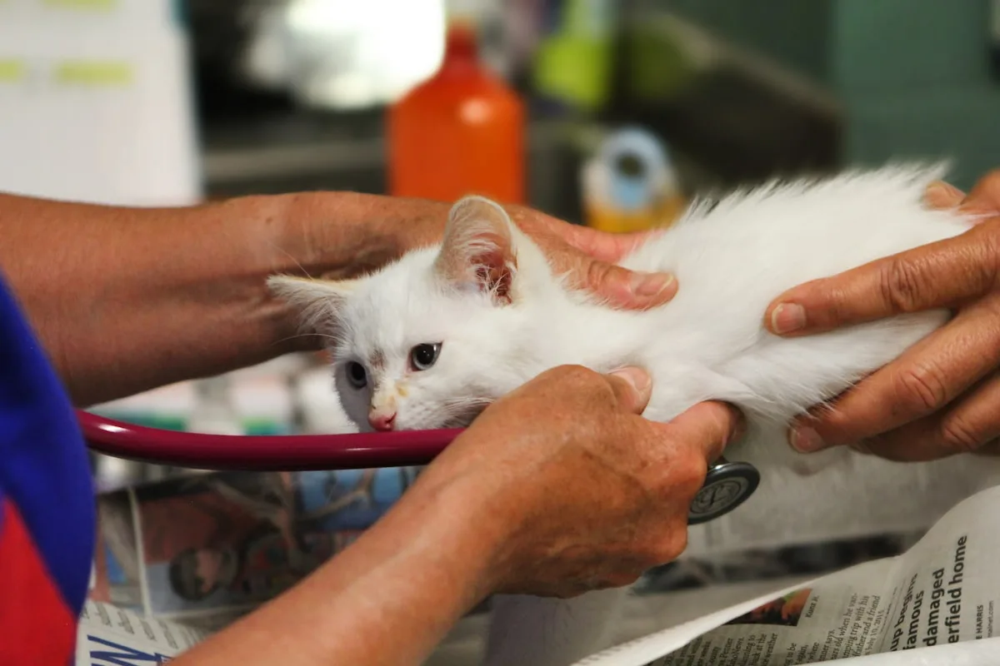
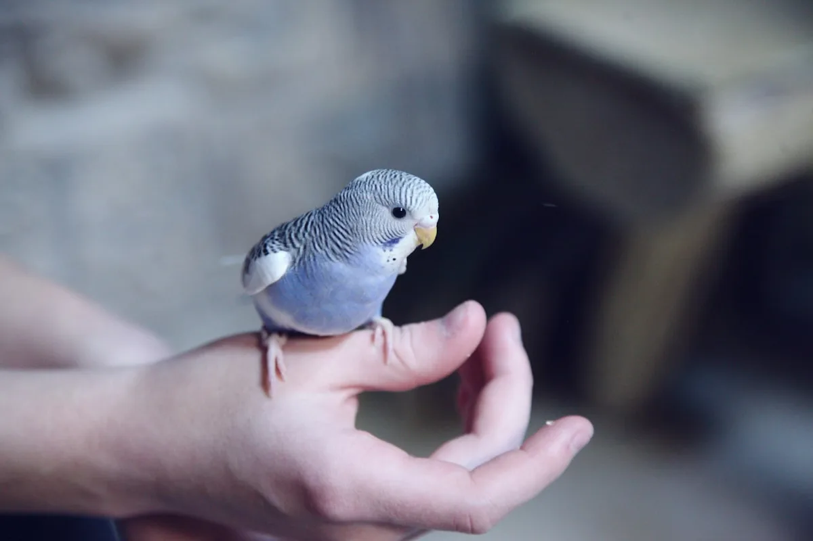
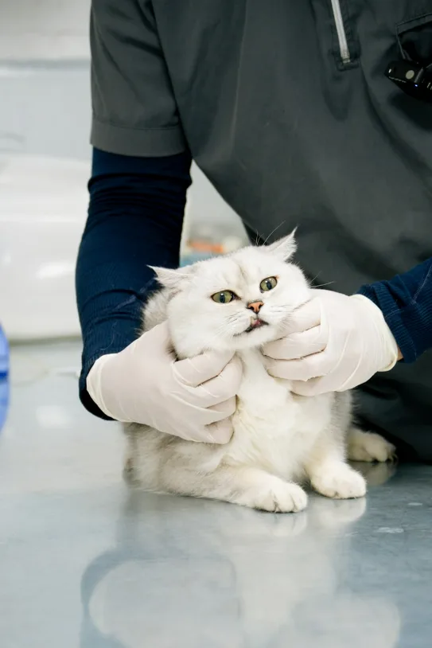
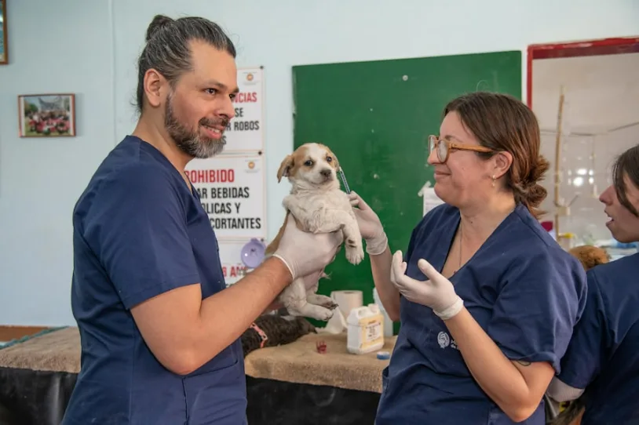
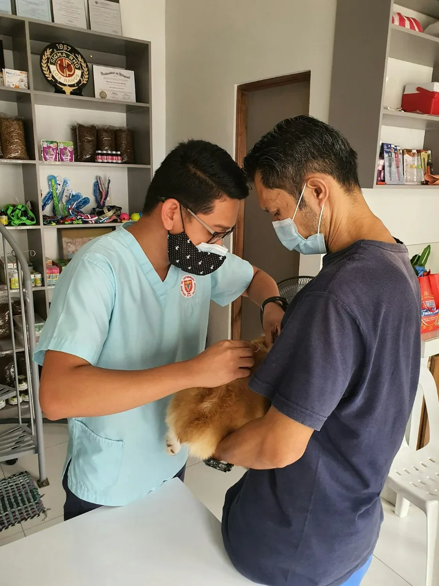
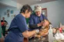

Emergency & critical care
Triage on arrival, stabilisation, oxygen therapy, transfusion and round-the-clock intensive monitoring.
Learn more
A veterinarian is on the floor right now. The phone is answered by a person, not a queue — and you stay with your pet the whole time.
These are the signs that should not wait until morning. There are others — when in doubt, call us and we will tell you.
Pressure held for five minutes and it is still going.
Open-mouth breathing in a cat, or gums turning pale or blue.
Any seizure, or a sudden inability to stand or walk.
Even if they get up and seem fine. Internal injury hides.
Chocolate, xylitol, grapes, lilies, antifreeze, medication.
Especially with retching that brings nothing up. This is minutes-critical.
Not sure? That is exactly what the phone line is for.
Call (555) 018-2400


From a wound that needs closing to a complex overnight surgery, we are the place to go with any kind of pet — including exotics — at any hour of the night.
Every service below is available around the clock, staffed on site, in one building.

Triage on arrival, stabilisation, oxygen therapy, transfusion and round-the-clock intensive monitoring.
Learn more
In-house digital radiography, ultrasound and a full laboratory — results in minutes, not days.
Learn more
Foreign body removal, wound repair, fracture stabilisation and caesarean, staffed overnight.
Learn moreThe worst part of an emergency is not knowing what is happening. Here is exactly how the next hour goes.
No appointment, no check-in queue. Tell the desk what happened and a nurse comes to you.
Your pet is assessed immediately. The most critical patient is always seen first.
You see the recommended treatment and what it costs, and you decide. No surprise invoice.
You are welcome in the treatment area. Updates every step, for as long as it takes.

We arrived at 2am with our terrier bleeding and they took her straight back. Someone came out every twenty minutes to tell us what was happening. I have never felt so looked after in an emergency.
They told us the cost before they did anything, and it was less than I had braced for. Our cat came home two days later. The vet called the next morning to check on her without being asked.
Our rabbit was seen at 4am on a Sunday by someone who actually knew exotics. That is the whole review. Nowhere else would even take the call.

Standards that are checked by somebody other than us.
You do not need an appointment and you do not need to be sure. Call us, or drive in. Someone is awake.